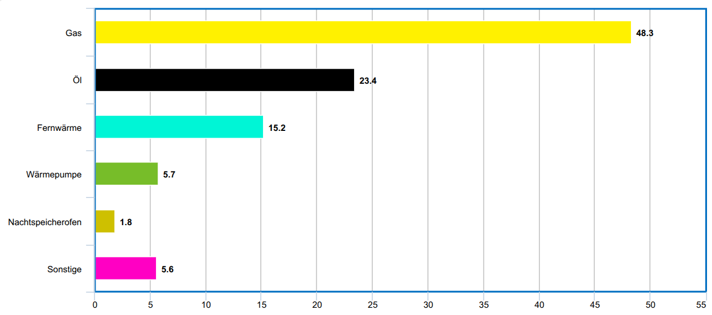
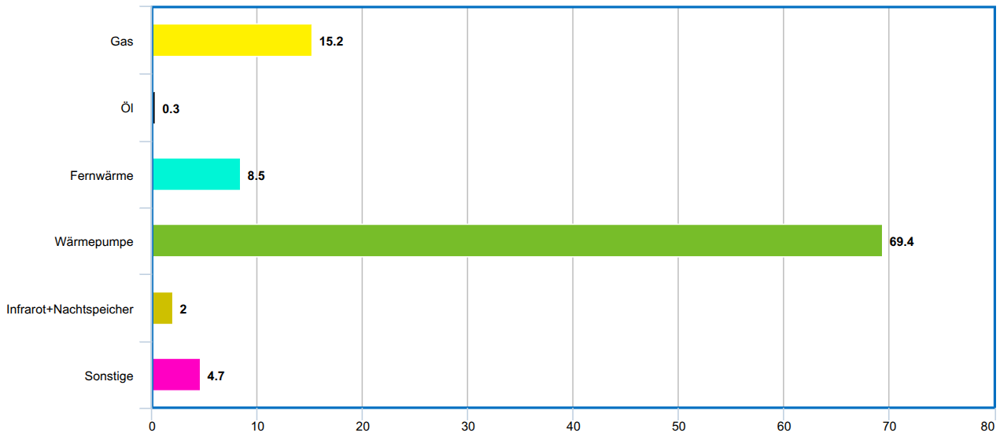

Schlechte Bildungspolitik kann uns volkswirtschaftlich teuer zu stehen kommen. Das ist mir klar geworden, als ich mir das Video vom Akkudoktor über die exorbitanten Preise von Wärmepumpen in Deutschland angesehen habe.
Das Problem
{kind=link}

Aktuell sind über 70% der verbauten Heizungen Verbrenner (Stand: Februar 2024).
{kind=link}

70% der Neubauten in Deutschland werden mit Wärmepumpen beheizt (Stand: Juni 2025).
Dieser Trend wird sich noch verstärken: Umso weniger Haushalte Gas und Fernwärme nutzen, desto teurer wird es für die verbleibenden Nutzer, das Leitungsnetz zu unterhalten.
Umso mehr Leute Wärmepumpen nutzen, desto günstiger/effizienter werden die Wärmepumpen durch Skaleneffekte. Auch der Einbau wird günstiger, weil mehr Installateure Erfahrung mit Wärmepumpen sammeln.
Kurzfristig heißt das allerdings, dass wir einen Engpass an Installateuren für Wärmepumpen haben werden.
Der Effekt ist, dass die Preise für den Einbau von Wärmepumpen in die Höhe schießen, weil die Nachfrage das Angebot übersteigt.
Was man machen könnte
- Gesellen-Ausbildung anpassen: Anlagenmechaniker für Sanitär‑, Heizungs‑ und Klimatechnik sollten als verpflichtenden Teil ihrer Ausbildung den kleinen Kältemittel-Schein (Kategorie II) machen müssen. Damit dürften Gesellen Anlagen mit weniger als 3 kg Kältemittel (hermetisch geschlossen: 6 kg) – also typische Wärmepumpen in Einfamilienhäusern – installieren, warten und auf Dichtheit prüfen. Das sind 1-3 Tage extra in der Ausbildung. Dafür könnte man die Ausbildung mit Öl-Brennwertkesseln nicht mehr als verpflichtenden Teil der Ausbildung machen, sondern einen optionalen Schein einführen.
- Meister-Ausbildung anpassen: Den großen Kältemittel-Schein (Kategorie I, ohne Mengenbegrenzung) verpflichtend machen (1-2 Wochen). Wurde auch in der Handwerks-Zeitung im Januar 2025 gefordert. Auch hier könnte man Teile der Ausbildung über Öl-Brennwertkessel optional machen.
- Bezuschussung der Ausbildung: Betriebe müssen mehr ausbilden. Aktuell ist es aber wohl wesentlich rentabler, neue Wärmepumpen einzubauen.